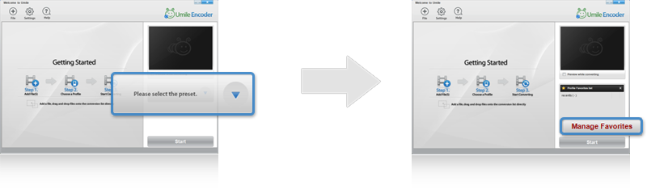
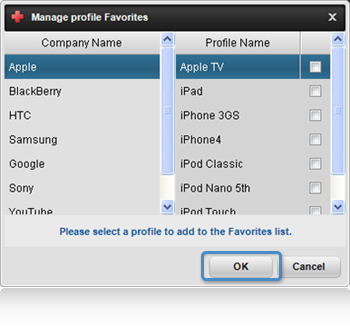
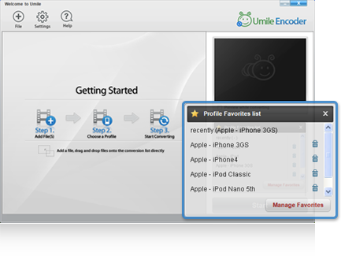

| The Favorite List is a function for easier management of the profiles of various devices provided by
the Umile Encoder, which allows the selection of the profile of a desired device and management of it
into the Favorite List. |
 |
| Setup Favorite List |
| When the program is executed for the first time after it is installed, there is no pertinent profile registered
in the following list, so it is the first to carry out a task to select a profile. |
|  |
|
|
 |
| Choose a Profile |
If you click the Manage Favorites List, there will appear a list of various types of devices provided by Umile Encoder.
Click [OK] button after selecting a desired device, then a Favorites List will be added.
(Multiple choices are available for devices) |
|  |
|
|
|
| Complete the registration Favorites List |
| It is possible to check the selected devices and those registered in the List through the Manage Favorites List.
The user always can add or delete a profile in the Favorites List. |
|  |
|